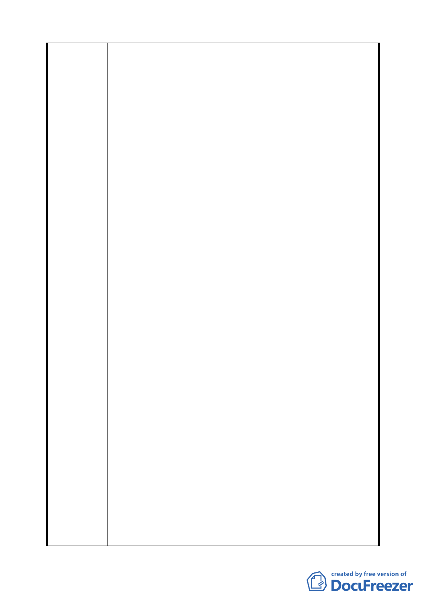

A：有關住戶出入口，正門交通問題：請查原始建照，每
戶正門寬度約 1.2 米左右(只給人行，機車出入)，而
主辦單位對該綠地拖延開發，使部分 1 樓住戶，將正
門擴展，違建現象及佔據停車，方可車輛出入(這是
合法現象嗎?市政府應有責任去解決這個問題吧?)而
有大部份 1 樓住戶及 2~3 樓及 2~5 樓之住戶皆為守法
者，若照主辦單位研議該綠地變為道路用地，不是讓
非法者更為方便，使守法者住戶，就來得接受非法行
為來降低生活品質，這個社會是公平嗎?
B：巷道形成問題：因政府編定為綠地，受害地主無法去
開發利用，而工務局及公園處拖延近數拾年，未辦理
徵收及開闢動作，使附近住戶車輛出入形成巷道及車
輛亂停雜亂現象。
C：有關停車問題:: 本綠地道路兩旁設置停車位，也只
能設置 20~30 位左右停車位，未能滿足附近住戶之停
車要求。應急速開發，減少住戶車輛(因明德站距本
綠地不到 2~3 分鐘路程，使住戶乘捷運)或設法開關
隔壁明德國中運動場地下為大型停車場，才能解決附
近住戶及明德站乘客之停車問題。(參考石牌路上之
石牌國小地下大型停車場) 。
三、都發局本次通盤檢討，也維持原計書綠地用地，未來開
闢時以提供 4 公尺之車行通道，解決住戶車輛通行問題。
本綠地開闢方式，採用交通寧靜區之手段設計，可提供
休閒之功能又增加綠化功能及使附近住戶呼吸到新鮮空
氣，又考量到台北市之市容瞻觀及住戶綠的生活品質。
四、如主辦單位爲了車輛出入口，巷道，停車問題，就研議
變更為道路用地，是否為了歸屬問題(道路用地是新建工
程處管轄)，看起來好像有推卸之責，台北市到處皆有車
輛出入口，巷道及停車問題如遇上類似情況，而將綠地
及公園皆變更為停車場及道路，就不必考量整體市容及
生活品質了(市容被破壞後，有錢買不到的，綠地變為道
路用地後，再變回來就很難了)。
五、北投石牌地區住戶密集，已缺乏綠色地帶，若在這塊綠
地變為道路用地，恐會影響到附近住戶生活品質。(那北
投、石牌地區有近 30 處綠地，就可比照辦理了)。
六、因文林北路 80 巷、94 巷皆有 6 公尺進、出之單行道，陳
情人建議未來規劃中央或靠邊４公尺之單行道，戶與戶
正門出入，依原建照大門寬度約 1.2 公尺左右寬度，留
供人行及機車出入， 餘寬度還有長約 3.5~6 公尺左右，
第 四〇 頁，共 49 頁